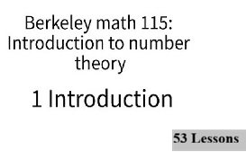
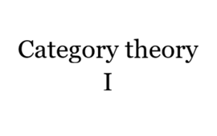

Je m'appelle Schleiden Alcius, je suis un développeur web passionné. Un ami m'a d'abord initié au développement web, je fus intrigué par la simplicité du html comparer à du java. Par la suite, j'ai continué un peu par moi-même, en suivant les cours de la chaîne YouTube "BroCode". Finalement, je me suis inscrit à CyberCap pour approfondir les connaissances des sujets que je n'avais pas encore abordés, comme la sécurité informatique, les bases de données, et d'autres sujets liés au développement web.
Ce site sur lequel vous vous trouvez actuellement. Il a pour objectif de présenter ce que je fais en informatique et en mathématique.

Site web de création de modèles fictifs pour rendre ma vie ludique. Je crée une compétence représentée par un personnage et je réalise les quêtes de ce personnage afin de faire croître cette compétence.

Vrais est un site où se trouve les grands esprits qui ont façonné notre manière de penser. Prensentement, il y en a 22, les autres sont à venir.

À venir.

Ma motivation pour ce cours est de comprendre les bases de la théorie des nombres et de comprendre comment elle s'applique dans la résolution de problèmes mathématiques ainsi qu'informatique.

Ma source de motivation pour cette leçon est de comprendre comment fonctionne les langages de programmation
Vrais est un site fait avec l'intelligence artificielle en tant qu'exercice, dans le cadre de ma formation, pour apprendre à l'utiliser. C'est un site qui regroupe les grands esprits qui ont marqué l'histoire. Je me suis rendu compte que l'IA réalisait des sites avec des notions beaucoup plus poussées. Je me suis mis à étudier les notions qu'il utilise pour réaliser un site aussi beau que Vrais.
Site web où je développe des personnages fictifs, leurs objectifs seront réalisés par moi. En tout il y a 4 personnages qui ont des défauts, des qualités, des peurs, des forces et faiblesses. Il est question de surmonter leurs peurs, renforcer leurs faiblesses et surtout trvailler leurs forces.